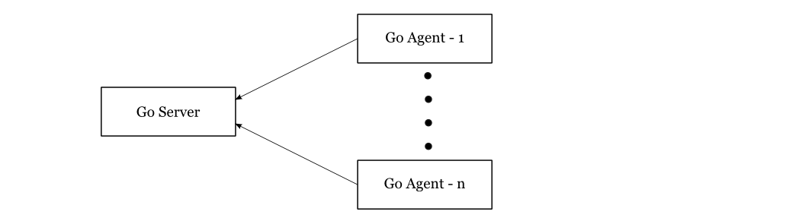
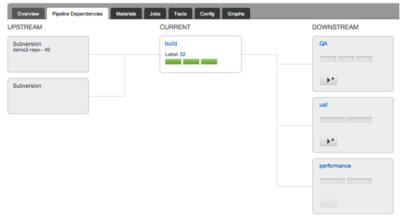

In order to compete in today’s IT market, you must be truly agile, you must listen to your customers and deliver features in a timely manner. In order to support business development and marketing in their lean strategies we, as developers, must leverage fast deliveries and deployments and test automations. Continuous Delivery makes it possible to continuously adapt software in line with user feedback, shifts in the market and changes of business strategy. Testing, support, development and operations work together as one delivery team to automate and streamline the build, test and release process.
There are a lot of quality tools out there. For a long time, we used Jenkins as the most widespread CD tool, with a great community and a lot of plugins and integrations with other tools. What we lacked was a natural pipeline flow and good visualization. We also lacked some more advanced features like pipeline dependencies, conditional triggering jobs from many pipelines, templating etc. We needed to look elsewhere and we decided to go with GoCD, a product by ThoughtWorks which became open source in 2014. It is a Java/Ruby on Rails advanced continuous integration and release management system, according to their website. The major reason why we chose it was that they modeled pipelines as first class citizens and that, in our opinion, it used right abstraction for delivery pipeline. But let us start from the beginning.
GoCD overview
At the highest level, Go consists of two main components, the Go Server and multiple Go Agents. The system works on a pull model where agents periodically poll the server for work.

The main flow of Go goes through a couple of following stages:
- User adds a pipeline with material
- MDU (material update sub-system) notices a new commit
- Scheduler schedules a build
- Go agents poll for work and get assignments
- Agent does the work
Let’s talk about the main building blocks of Go. As stated before, the main abstract is a pipeline which is the highest unit of work with its inputs and outputs. The input object of one pipeline is called a material and it can be either a version control resource (Git, Gerrit, Subversion, Mercurial) or an output from another pipeline. The output of a pipeline is called an artifact. Since there is one server and multiple agents, there is no guarantee that the whole pipeline will be performed by the same Go agent. Artifacts are copied to Go server and picked up by agents that require them for their jobs.
Each pipeline consists of one or more stages, where each stage has one or more jobs and each job has one or more tasks. Granularity to this level of details is done because of parallelism. Inside pipeline stages are sequential and can be triggered automatically on success or manually. Within each stage, jobs are parallel. The outcome of a stage is considered as failure if at least one job fails. Again, tasks within each job are also sequential.
After installing Go server and client there is no need for an extensive configuration. However, it is recommended to create a separate partition on a computer’s hard disk for Go server artifacts (artifacts can grow over time and problems may occur). In server configuration, there is also an admin tab for URL configuration. We needed to get feedback on failing builds, so we integrated Go with LDAP so each user of Go had an email and could subscribe on build information based on preferred filters. Here is a link which explains the authentication process.
It is worth mentioning that GoCD has a powerful API for power users where the entire configuration can be performed via REST. It has great documentation with examples, JSON requests and response. Here is a link to GoCD API documentation.
Pipeline dependencies
Go supports pipeline dependencies. Artifacts defined in upstream dependencies can be accessed by downstream dependency. Downstream pipeline can be configured either to be triggered automatically (for example for building on development environment) or manually (for example for building on production environment).
Multiple pipeline dependency is called fan-in and it ensures that pipeline is triggered only when all upstream dependencies finish. Upstream dependencies consist of other pipelines or version control which make them powerful. If you have a client server application and have functional tests on the client’s side, which depend on the server being updated, you can make a client functional test pipeline which will trigger on commit on client and successful build and deploy of server side.

The additional challenge here is a diamond-like dependency, where it is not enough for both upstream dependencies to finish but to have right versions. The following diagram depicts that problem. Here, configuration is really important, C1 must be set as material for both C2 and C3 and C2 and C3 are materials for the pipeline Package. The package will auto trigger when both C2 and C3 go green with the same version of code.

Pipeline templates
Template engine is a great effort and time saver. Each pipeline can be promoted to template and, based on that template, other pipelines can be built with a few clicks. We used this extensively for deployment pipelines. Usually, there are multiple environments (development, stage, UAT, production) and deployment process is the same with only a few parameters which are different. You can create one deployment pipeline and test it. When you make sure it works, extract the template out of it and clone the deployment pipelines for other environments. Differences can usually be covered with a couple of parameters, which can be created upon pipeline creation.
Conclusion
In the introductory part, we mentioned that pipelines are modeled in GoCD as first class citizens. In Jenkins, you can order a row of boxes and let the flow go through each one of them until it finishes. Each box here in Jenkins is equivalent to each task in GoCD. Moreover, in GoCD, each box is pipeline itself with its stages, jobs and tasks.
GoCD is a fairly new player in the automation world with refreshing UI and a couple of nice concepts. The community is still growing but it is responsive. We had a couple of problems which we posted on StackOverflow and usually got answers pretty quickly. We are using Gerrit/Github plugin to notify Github PR on failed or passed build which is being actively developed. New releases are pushed frequently. Documentation is great, especially API documentation. It’s our pleasure to use such a great UI and a couple of nice advanced features. You have a possibility to model your pipeline in a great variety of ways. There are some features missing but we in SmartCat are all about open source so, in the future, we will try to help this project and start contributing.
About the author
This is guest post by Nenad Bozic, one of Co-Founders of SmartCat. You can find out more about Nenad and SmartCat team on their website.